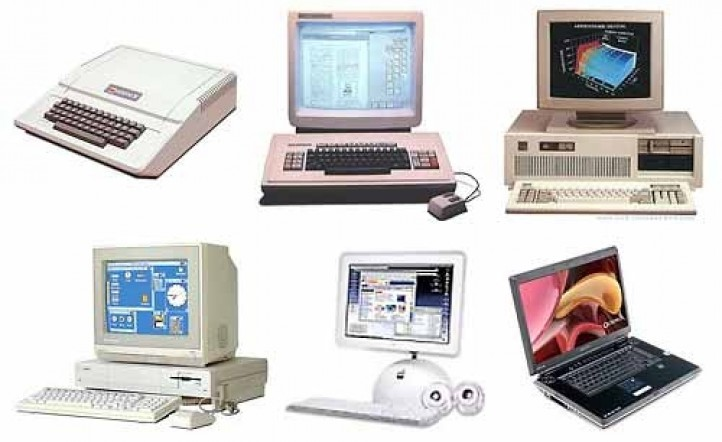

Departamental 1 - Equipo


Tarea 1: Computación y Multimedia
Investigación sobre la evolución de la computación multimedia, la web en la multimedia y los formatos de imagen, video, audio y texto.
1. Evolución de la computación multimedia
La computación multimedia ha evolucionado desde los años 60 con los primeros experimentos en gráficos por computadora. En los 80 y 90, el avance en hardware permitió el desarrollo de software multimedia como Flash y DirectX. En la actualidad, la multimedia es impulsada por la inteligencia artificial y la realidad virtual.
2. La web en la multimedia
La web ha cambiado la forma en que consumimos contenido multimedia. Plataformas como YouTube, Netflix y Spotify han revolucionado la distribución de video y audio. Tecnologías como HTML5, CSS3 y JavaScript permiten experiencias multimedia interactivas.
3. Formatos de imagen, video, audio y texto
- Imagen: JPEG, PNG, GIF, SVG
- Video: MP4, AVI, MKV, WebM
- Audio: MP3, WAV, AAC, FLAC
- Texto: TXT, PDF, DOCX, HTML
Tarea 2
Descripción breve de la tarea
Tarea 3
Descripción breve de la tarea
Tarea 4
Descripción breve de la tarea
Tarea 5
Descripción breve de la tarea